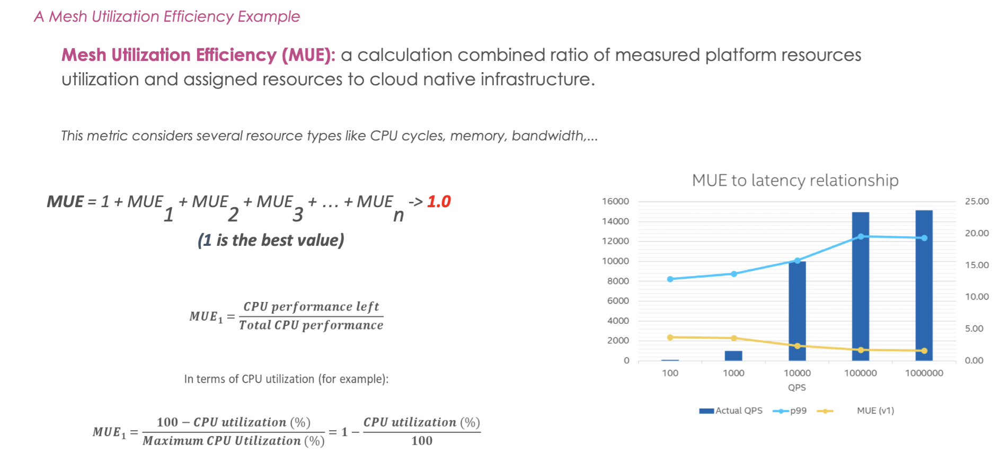

Cloud Native Value Measurement
MeshMark is a performance index that measures the value and overhead of your cloud native environment.
What is MeshMark?
MeshMark is a performance index that measures the value and overhead of your cloud native environment. By converting performance measurements into insights about the value of individual, cloud native application networking functions, MeshMark distills a variety of overhead signals and key performance indicators into a simple index.

MeshMark: The Formula
MeshMark functions as a value performance index (a scale) to provide organizations the ability to weigh the value of their service mesh versus the overhead of their service mesh and assess whether they are getting out of the mesh what they are “paying” for in it. MeshMark’s scoring system ranges from 0 to 100 and incorporates collections of resource utilization efficiency calculations, categorized into similar consumption classes.
=
MeshMark utilization efficiencies and their classes
MeshMark Utilization Efficiency is a calculated, combined ratio of specific infrastructure resource utilizations to assigned resources to cloud native infrastructure.
The example depicted is a simple ratio. The graph demonstrates that as that as the latency increases, your utilization efficiency lowers. In this example, latencies are increasing as the queries per second increases, indicating that the infrastructure and/or its configuration is sub-optimal. The "1-CPU utilization" identifies what CPU cycles are left behind and not used. It is directly related to the latency KPI, so MUE ratios are more effective as a measure of efficiency, the latency P99 gets higher as MUE gets lower and the throughputs get higher as MUE gets lower. As with Power Utilization Efficiency (PUE), MUEs can be generated for any resource in the Datacenter hardware.
Tooling that implements MeshMark includes Meshery, the cloud native management plane. Users of Meshery can configure their Kubernetes deployments, any and every service mesh as well as onboard and offboard their workloads onto any given mesh. Once they have done so, Meshery will begin to calculate MeshMarks continuously.
Watch the MeshMark demo
Excerpt from ServiceMeshCon EU 2022: demo of MeshMark using MeshMap.